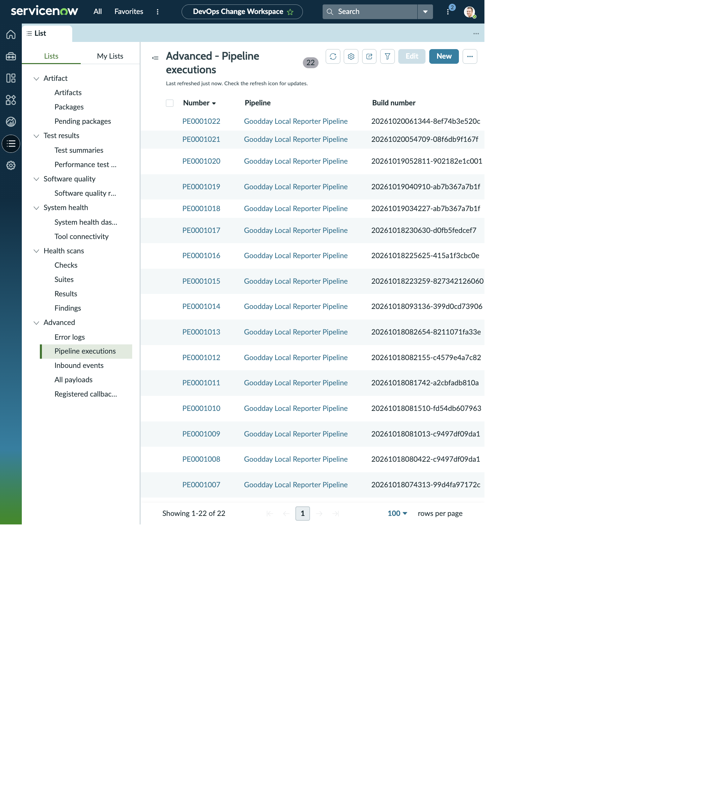

DEVOPS CHANGE WORKSPACE · PIPELINE EXECUTION
PE0001022 · Goodday Local Reporter Pipeline
The execution has three step records, all shown as Completed. The package and step-level change request fields are empty on this record, so this run is kept separate from CHG0030012’s related tests and commit.
PIPELINE EXECUTION RECORD
PE0001022
- Pipeline
- Goodday Local Reporter Pipeline
- Build
- 20261020061344-8ef74b3e520c
- Branch
- feature/STRY0010031-dvc-evidence
- Current step / total steps
- 3 / 3
- Build Test Passing %
- 100%
- Package
- (empty)
- Start time
- 2026-10-19 20:00:00
- End time
- 2026-10-19 20:00:00
- Duration
- 0 Seconds
- Pipeline execution URL
- Local JavaScript Object Notation artifact reference appears in the workspace list; not embedded in this record form.
RELATED LIST · STEP EXECUTIONS (3)
All steps completed
| Number | Step | Change request | Orchestration task | Task execution | Duration | Start / end | State | Change comments |
|---|---|---|---|---|---|---|---|---|
| SE0001047 | Build and checks | (empty) | Build and checks | (empty) | 0 Seconds | 2026-10-19 20:00:00 / 2026-10-19 20:00:00 | Completed | (empty) |
| SE0001048 | Automated test suites | (empty) | Automated test suites | (empty) | 0 Seconds | 2026-10-19 20:00:00 / 2026-10-19 20:00:00 | Completed | (empty) |
| SE0001049 | Production deployment | (empty) | Production deployment | (empty) | 0 Seconds | 2026-10-19 20:00:00 / 2026-10-19 20:00:00 | Completed | (empty) |
Association boundary: the Step Executions list leaves Change request empty for all three steps. The CHG0030012 record has its own Test Summaries and Commits related lists; those are captured on the separate change page.
WORKSPACE VISUALS
Pipeline Executions workspace list
See the working view in context. The record details above remain available here as readable HTML.
